ITL 2023 Postmortem
Table of Contents
Tournament Report: ITL Online 2023
Intro
This document is a bit of a postmortem / race-report-like overview of my experience competing in ITL Online 2023. A lot happened over the time I spent participating in this event, and I figured it would be good to get out my thoughts about playing.
ITL is a 3-month long tournament for four panel dance games (like Dance Dance Revolution or In The Groove), and is primarily run through a Stepmania client called ITGMania. The way it works is that you download a pack full of curated charts, which span a wide range of difficulties. Each chart is worth points: harder charts are worth more than easier charts, and higher scores are worth more than lower scores. "Ranking Points" is how progress is primarily measured for this event, which is the 75 best scores you have achieved (or, simply, the sum of all your scores, if you have fewer than 75 scores). I have spent the better part of the last few months playing in this event, so I figured a longer writeup on it was warranted.
Honestly, I played a lot. I played probably a greater amount than would be advisable if I were to recommend to a friend that they should participate. Throughout this event, I really got bit by the ITG bug again; it was an all-consuming thing in the back of my mind, a sort of obsession. By the end, I would want to spend my whole weekends playing multiple sets, I would play close to every day, I would play for hours. It was an absolute blast.
I've structured this into two main parts: a quantitative part and a "race report". If you just want to see pretty visualizations, "A Look at the Data" should be enough. If you want to know how I felt about the event at various points, you might like the race report.
A Look at the Data
I suppose this is what we're really here for: how did it go? Well, thankfully, this tournament keeps fairly detailed track of how you're doing over time. With some simple code1, we can get a nice visual picture of how the tournament went for me along a couple of different metrics.
Ranking Points over time (chronological)
One thing which is nice to know is the rate at which I earned points, relative to how long the event went on.
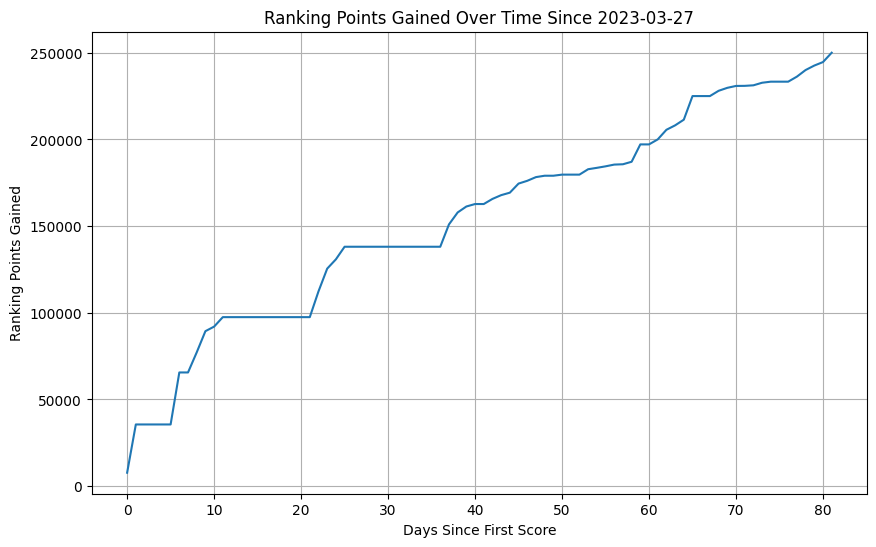
This chart tells the story pretty well: playing a few relatively easy charts nobar early on, blasting off to about 100k starting on April 2nd, the day my bar arrived at the front door of my apartment. To me, this day marks the real "start" of my participation, even if I had a few scores registered before. As a primarily bar player, I was really having a hard time playing more than a couple of lowers during my sets, and the arrival of a bar ignited my interest in playing at home a great deal2.
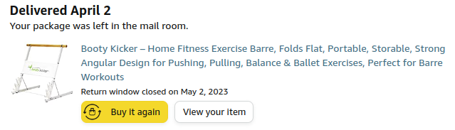
You can see the two relatively inactive weeks (one I had a work onsite event, the other I got married) and aside from that I played more or less every day, with some exceptions.
Another good way to visualize this is with a heatmap with the number of points earned per day. This makes it a bit clearer day-to-day what my sessions were usually like.
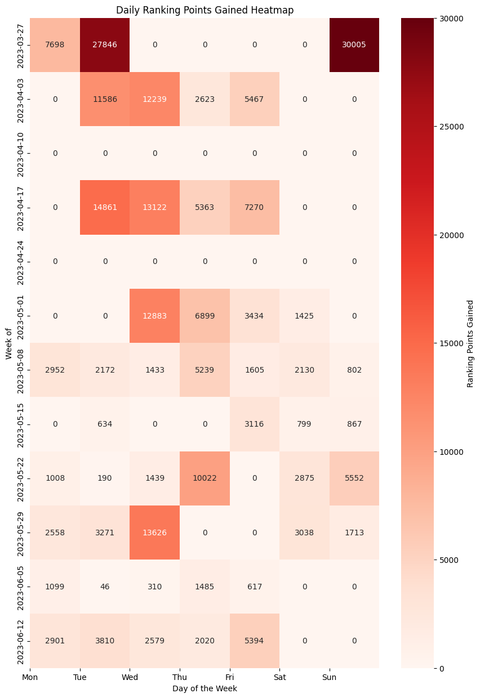
Something you might want to know is how I did relative to other people over the course of the tournament. The answer to this is: I do not really care. As fun as it occasionally was to mentally compare to other players, the ranking points total did not serve as a great proxy for the skill level of players I felt particularly better or worse than3. Generally speaking, I felt like everybody in my surrounding stratosphere points-wise was clearly much better than me at the game, but through grit and long hours I could accumulate tons of points somehow.
As such, I'm not going through the trouble of analyzing every play from every other player just to compare if I got points faster or slower than them. Just assume I'm worse. The point here is how my individual effort went.
Days played / number of scores submitted per day heatmap
"How much did I play" is a question which probably deserves two separate answers. First, how many days did I play? I tended to play by doing, roughly speaking, alternating "easy days" and "push days", with the occasional recovery day / day off. At least, that's how it felt like in my head. Below you can see what actually happened:
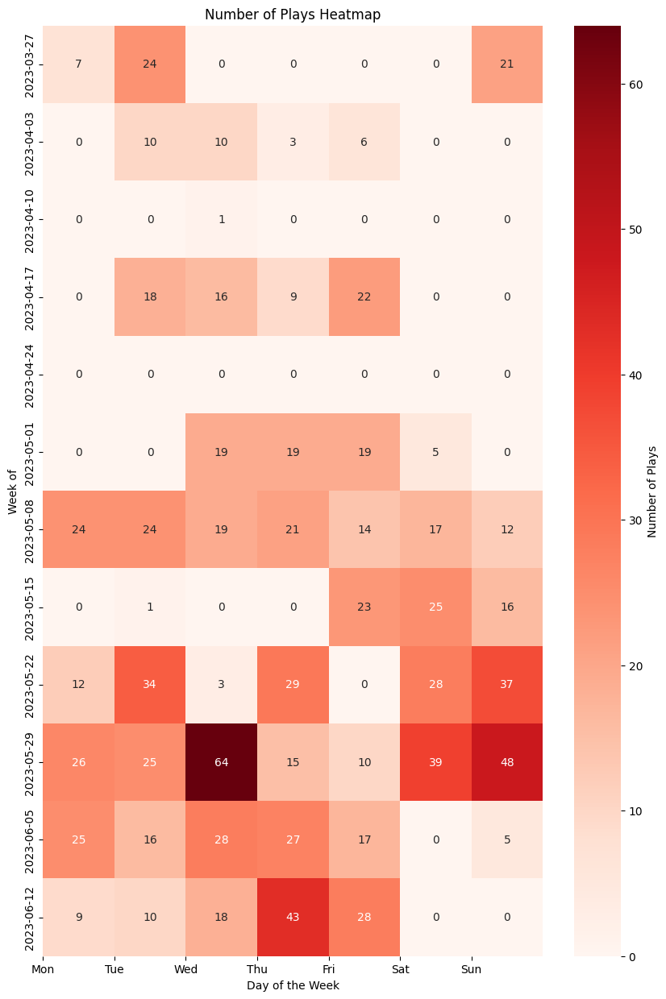
So, I played a pretty consistent amount most days, and had the occasional push session, which tended to be on weekends. Maybe you can see the "easy day" / "push day" if we look at the average block level of these plays.
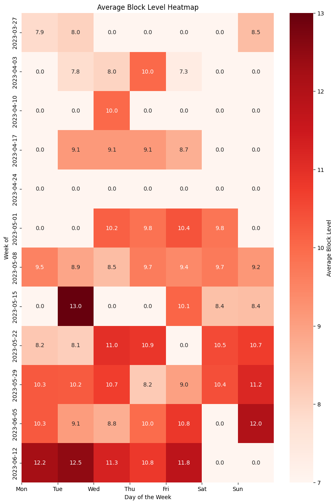
You can see here that I did roughly try to do this, and did a pretty poor job of it ("hard day" meant something like 10.2, and "easy day" went something like 9.8). You can see the block of time I spent focusing on lowers, and then the day I decided to ramp back up and try for points again.
Amount of time played / session analysis
Drilling a bit deeper, we can try to estimate how many hours I spent actually playing ITG during this time period. The way that I'm estimating this is by looking at my plays, and grouping them by the number of plays which happen within an hour of an adjacent play. If a session looks like it has only 1 play in it, I assume it was 10 minutes long. Otherwise, my session length is the distance between the first play and the last play, where no two plays are more than an hour apart. This isn't perfect (It would be fine if I warmed up and cooled down every set, but that's on me), but I'm assuming the sessions where I get 0 clears roughly balance out with the sets where I truly only play one chart and then call it a day.
Overall, it seems I played about 74 Hours, 34 Minutes during this tournament.
Combining the above with the heatmaps from earlier, we can actually directly see how much I played every day throughout the event.
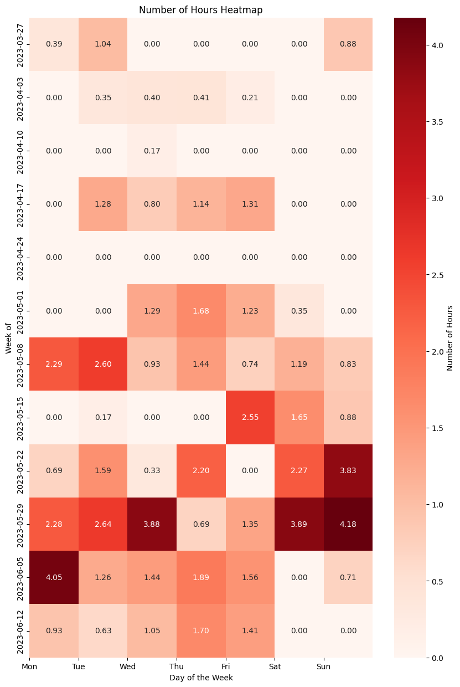
Two things jump out at me looking at this. The first is, wow! I sure got a lot more fit during this event. I was able to play for increasingly long amounts of time as the event progressed, and that is really nice to see as someone who had "get in shape" pretty high on the priorities list for this tournament. The second is, oh dear, I really am playing a lot, aren't I. I don't think it's really advisable to play this much, but I will say that at the very least many of these longer blocks are split into two, or even three sessions, so it's perhaps not as ludicrous as it looks from this figure.
Other Misc Visualizations
Below are some less important metrics which are still fun to look at. Max point gain per day, max play per session, average block level per day, etc. These are not terribly important to build a mental picture of my participation, but they are fun to look at, so I'll include them anyways.
Average EX score per block is very funny here: 14 is quite a bit higher than 13 because I passed only two 14s, one of which was 85 EX (Eternity), compared to 13s for which I passed a couple of them beyond just the stamina charts (which drag down the average dramatically, since 13-14s are quite challenging for me)
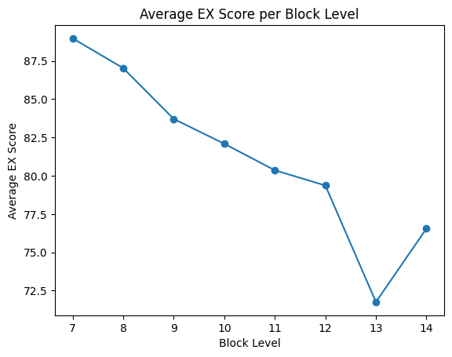
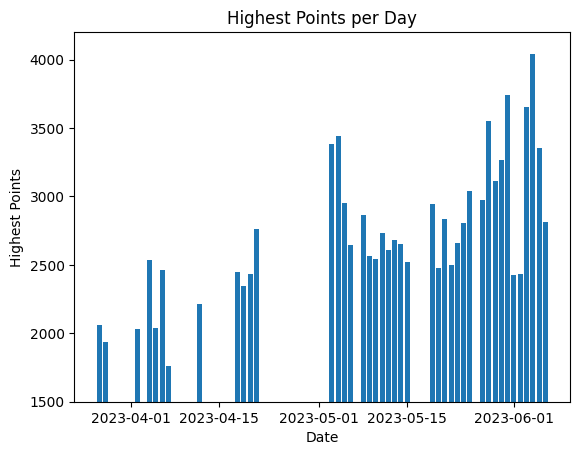
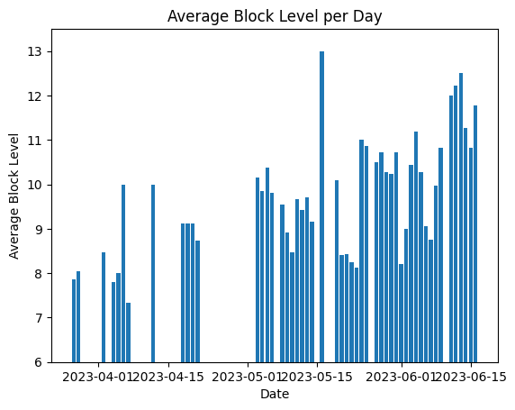
"Race Report"
What follows from here is more of an emotional postmortem: the visualizations above quantify what was ultimately about a hundred hours of human experience, you know, that I engaged with in real time. I am not a machine; I felt dispair, frustration, hope, joy, and all sorts of weird feelings at different points during this tournament. If you don't care about this, feel free to just skip to the end (or stop: not much from here in the way of fancy graphs).
Deciding to Enter
Some background about me: I started playing ITG in 2021, and I play mostly Stamina on a Bandit pad that I built. I played for a year and reached a modest (180 | 14), which basically means I could do 32 measures of 180 bpm stream, and I could pass a 14 block chart. I didn't record the former, but here's me doing 16 measures with relatively comfortable lifebar; my first 14 was Katamari on the Rocks {14} which required me to repeatedly yell at the screen to not give up in the last block of stream. My exercise at the time was a mix of ITG Stamina and lifting weights in my home gym, both of which I had to stop doing when I had to go through some surgeries throughout the second half of 2022.
I spent a good amount of time in late 2022 / early 2023 not prioritizing my exercise since I was still recovering / looking for a new job. I fairly abruptly moved to Los Angeles in February 2023, and have been traveling back and forth between my old residence on the East Coast and my new residence on the West Coast (long story).
In short, I got really out of shape really fast: I lost a ton of weight during the immediate aftermath of the surgeries, and then gained it back after resuming my normal eating habits afterwards while still not training: it was sort of like speedrunning muscular atrophy. But, honestly, it felt kind of okay – I like to exercise, and I have a good amount of experience managing my diet, so I went into 2023 pretty confident that I could turn everything back around. One of my first purchases living in LA was an L-tek dance pad, and I played DDR A20 charts nobar with it for a little bit to stay active.
An important thing to know about me at the time is that I was absolutely not a tech player. Playing these A20 charts, I was primarily playing 12-13s (X-scale, 8-8.5ish ITG scale). The entire time I've seriously played dance games I've mentally considered Greats to be a more or less equivalent judgment to Blue Fantastic4. The extent of my "tech" experience is the period of time I practiced DDR Extreme to prepare for Genesis 8, which I had to drop out of after unexpectedly qualifying for top 64 at Super Smash Bros Melee5.
It was around April where I decided I was going to take ITG fairly seriously again. I didn't really like playing stamina on the (at the time unmodded) L-tek, so I bought a commonly suggested bar and decided I was going to make my debut as a beginner tech player. After struggling a bit with the low sensitivity of unmodded L-tek pads, I bought the DDRPad "Large" copper tape mod kit which raised the sensitivity a great deal6.
This is Kind of Complicated
I eventually found that improving at tech was not as straightforward as improving at stamina. When I was really grinding stamina, I mostly failed charts that I attempted trying to push for passes I could just barely accomplish, played speeds that were outside of my comfort zone, played for longer durations than I could hold comfortably, etc. Stamina was easy to grasp for me – the entire game is about handling many different kinds of discomfort (form, speed, energy, sweat, etc), and if you want to improve at Stamina, you just find some discomfort that is particularly uncomfortable for you, and throw hours at it.
In comparison, I really did not understand how I was supposed to get better at tech. I could pass the charts just fine – "they're just tens" – but I'd pass them, even FC them, with absolutely horrific FA, and hardly get any points for any of my clears.
So I asked the ITL Discord, and I got a lot of really nice advice from very helpful people there. Here's some of it:
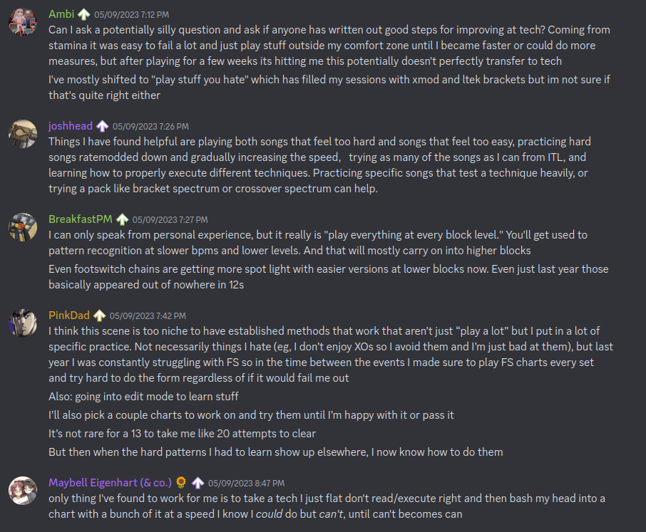
In taking this advice, I swallowed my pride and spent a good amount of time in the 7-8 range. I made a point to put "FC all 7-8s" in my list of goals for the event, which was not a particularly difficult one as it was one which would commit me to spending a very long time playing charts in that range relative to the one 7 I would play every other session as a halfhearted warmup.
It worked!
We're gonna go TURBO [10]
At this point in the event, I've reached about 187k RP. I had more or less just crossed the 150k threshold, which I reached mostly because I discovered the stamina unlock chain and got a ton of points cruising to very easy 10-12 stamina charts even for a relatively out of shape former 14 block player7. I mostly spent this time period trying to grind lowers in an attempt to reprogram myself to consider "great" a decidedly not great judgment8.
Something happening in the background of all of this is a pretty noteworthy amount of weight loss. I've been playing a lot, I've been super strict about the food I'm eating9, I'm walking to work, and so on. I don't own a scale, so I am mostly unable to appreciate how well it's working (if it is working at all). But after doing all of this timing work, getting close to +0 points every session, I made the decision to start trying to play for points again.
This was the first of the "heater" sessions I had during this event. This was a super intense set – I really didn't spend that much time resting, it felt like I just played chart after chart. It felt so much easier to move around compared to the last time I spent a lot of serious time in the 11-12 range. It wasn't even really that I had improved that much at timing (those gains would materialize a bit later), but I could feel myself having more energy. The idea of playing for two hours just felt ludicrous to me at the time.
At the end of it I remember thinking: maybe it's possible for me to reach 225k10.
Hitting 225k
I was at my most insufferable during this time period. I eventually got it into my head that I really, really wanted to hit this points goal, and I would not shut up about this to my friends and to my wife11. I remember writing in my journal about how it just barely seemed possible – that I had something like 25 days to accumulate roughly 25k more points. If I had twenty more good sessions, where I got a solid 1000 ranking points every session, I would barely make it. In my own words: "I might need to lean at the tape a bit, but I think I can do it".
The first few days after that awesome 10k session, I was averaging something like 3k ranking points each day. I thought this was to be expected; it would obviously just get harder to get points the longer time went on, so I shouldn't get too excited about being a little ahead of schedule. Things were going well, but it still felt like I would be fighting to get it done in time.
6 days after the my great 10k RP session, out of nowhere I had a session where I got 13.6k rating points across almost 4 hours. Just like that, I had 225k ranking points12.
I honestly couldn't believe it. I thought I had "used" my heater session for this tournament on my 187k two hour set. The last time before that I had a heater session was when I got my first stamina 14 pass, a very very long time ago13. The idea of two in a 7 day span was something I couldn't wrap my head around. I saw the little green plus icon next to a six digit number that started with 225, and it felt like my whole body started vibrating. This was a goal I had set for myself that I was unsure would be possible for me to hit within a month, and I had hit it with twenty days to spare.
I bought some nice beers and let myself celebrate a little bit. I haven't had many chances to do that, given how many calories are in beer.
FSRs My Beloved
I spent the last week of the event visiting my wife at our place in Maryland, where we keep my travel pad. Having spent the last two months playing on a penny modded ltek, I figured it would be a big shock playing on a different pad.
The entire time I had been playing tech, I had built up a mental profile of myself as a tech player: I am good at footswitches, I am bad at bursts and brackets, I have good endurance but I don’t have much footspeed. I returned to playing on my FSR travel pad and found that this was all just a mirage, and that the truth was actually quite a bit murkier. Playing on the FSR pad, I was suddenly essentially a completely different player: I was good at bursts, I was bad at footswitches, I could pass Stamina 14s again14, and so on.
What really defined my skill level was my ability to perform tech patterns, conditioned upon what equipment I was using. Pads have tradeoffs15, and what made me me as a player was my ability to navigate those tradeoffs, rather than a simple immutable skill level at some particular sequence of arrows. I wasn’t bad at bursts, I was bad at doing bursts on the ltek. I’m not sure this has useful implications for other people, but for me it was a key psychological moment in my personal little ITL journey: I started hammering away at charts which I was avoiding because I thought there was no way I’d get points on a burst chart. I felt frustrated about not being as good at footswitches, but I knew that I was capable of hitting them because I had been able to on another pad and it was more about translating my ability to the hardware rather than a fundamental human limitation or something.
The only real exception to this was jacks. I am just bad at jacks. Man, do I hate jacks. When ITL is over I’m going to play so many jacks charts.
Ultimately, I think as far as my ability to collect RP is concerned, I am probably a “stronger player” on a super sensitive FSR pad (which even still represents the vast majority of my in game hours). I’m kicking around the idea of building another one so I’ll have access to both types of pads. But I think “stronger player” is funny to think about here. In either case, it is still my body which contains all the skill at ITG, it’s not “in the pad”. In the same way I don’t think the current me could stream 175 on an ltek, I don’t think the current me could FEC a 9 on the hyper sensitive FSR pad (or FC any chart with footswitches for that matter).
Ultimately I like both pads, and being limited on certain things based on the hardware I had access to at the time really hammered home to me that I could stand to improve at everything (even stuff I thought I was “good at”).
Into the Future
I would push on and hit a few other really awesome milestones. I got my 75th score over 3000, I got a 4k score, I got my first tech 13 (CANDY LAND) and my first tech 14 (SCREW owo SCREW). I reached 250k Ranking Points on Friday, June 16th, and decided I was pretty much done with this year's event.
Conclusion
I ended the tournament at 250,023 Ranking Points. At the time of writing, I am 359th, out of 109416. I lost roughly 10 lbs over the course of my participation.
Did I Meet My Goals?
Below is the goals document I had kept in my phone's notes app.
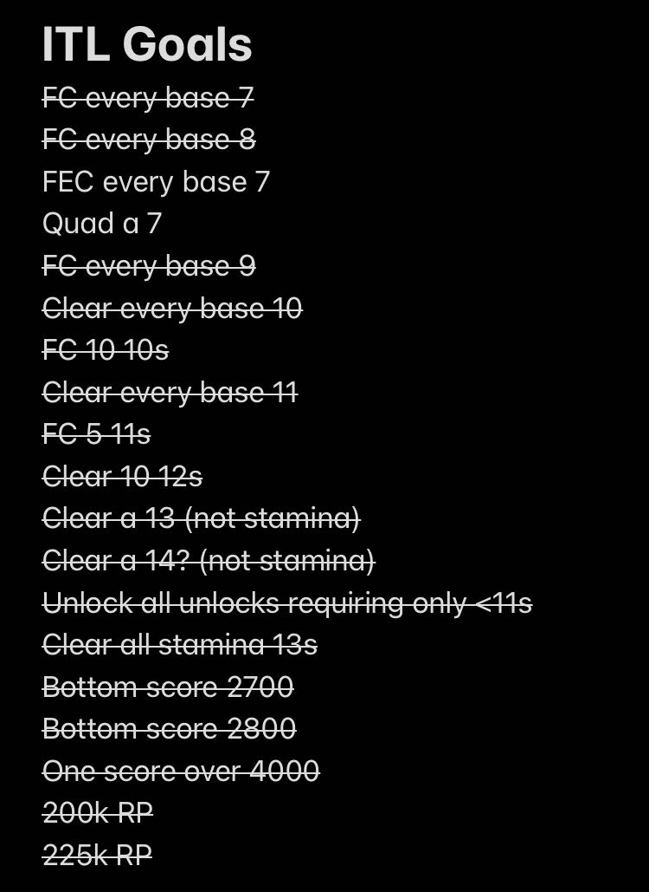
Looking back at these goals is pretty funny now. I made them just a bit before that first heater set, when I got to about 190k. Some of these felt truly ridiculous to write down. Clear a 14? You gotta be kidding me. It could be months, years before I clear a 14 given that I was struggling through the easiest 12s in the pack.
Others felt laughably trivial. “FC 5 11s” feels a bit silly since, if I remember right, I had 3 FCs on 11s at the time (Eros and Apollo, Catch the Wave, and Ugoki). It’s almost embarrassing to look back on it and think that I believed it would be highly challenging to get just two more FCs on 11s within the span of three weeks.
Overall, though, I am over the moon with how much of this I managed to cross out before the event ended. I got about halfway through FECing the sevens before getting a bit bored of the lowers grind. The only one which truly intimidated me, in the end, was The Quad. My timing improved so much during this event, but even so, landing a quad still feels so far away. This will probably be a higher priority goal of mine going into next years event.
Do I Have Regrets?
I do not really have too many regrets about this event overall: in general happy with what the event did to my skill level and my body. Two things really jump out at me: starting earlier, and connecting with other people.
I think I felt a pretty crazy pressure to play a lot of hours in a short period because of starting later into the event. In hindsight, it wasn’t even that much later! I lost about a month of time in a roughly three month event. But I think spreading out my hours over a three month period would have made my gameplay habits somewhat more reasonable, and I probably would have felt fresher in my sessions if I felt I had enough time to take days off. Perhaps this is just cope though: maybe I should consider it a blessing I didn’t blast through 60 additional hours with the available time.
The second thing I regret is being so intimidated to try to connect to other players. I started trying to do this a bit more in the tail end of the event: watching other people’s uploads, mentally keeping track of their goals and cheering them on in the club chats, popping into peoples streams to try to be encouraging, etc. I know that in some sense, I was ostensibly competing against these people, but it always felt like a solo sport more than a tournament to me. Maybe this is different when leaderboard rank becomes more than some vague percentile-like metric, but seeing people push themselves to meet their goals is the best shit ever. I want to be less guarded about cheering that on in the future, even for people I don’t know much about beyond the occasional wordless YouTube or score drop.
Overall Feelings
I love this game. I still consider myself a beginner-level player – both for stamina and now for tech. But I feel like I've gotten far enough at both disciplines to really say that I get it. Playing this game for an ungodly, borderline unhealthy number of hours during the course of this tournament really pushed me to pay attention to my body in a way that no other video game ever has. I wanted to be fitter so I could move faster, so that I could move for longer, so that the fun would never have to end whenever I opened the game. Grinding out full combos, grinding out hard charts, grinding out easy charts, all of it involved pushing my body to move in ways that it could not move before; to move with precision or speed or durations which were simply inaccessible for the version of me that was struggling through DDR X-scale 12s no bar just a few months ago.
You have to scroll past five pages of incredible players to see my gamertag on the leaderboards. I didn't do anything amazing during the course of the event, by any stretch of the imagination. But I got to feel happy about scoring well on charts, and I got to feel that happiness so many times. That, to me, felt like the point of all of this. I may not be a great tech player, but at least now I am at tech player.
Footnotes:
I say simple – the code is simple, but figuring out how to write it was hard as hell! There's no documentation on how to query the groovestats api to get scores, so what I ended up doing was copying huge chunks of the completely human-unreadable js file on the itl website into chatGPT and asking it "does this text contain a way to query the api for scores?" until it found it for me. From then on it was easy :)
I might even go so far as to say I like it better than I like the L-tek, since the width makes it so much more comfortable to play compared to a DDR bar, and I still frequently complain about doing brackets on my L-tek despite penny modding it
DayaniXO's scores come to mind as someone who had fewer points than me but whose scores I could not even vaguely imagine approaching at my current skill level. ITL in general seems structured to reward pushing for hard clears, which is fortunate for me as someone whose skillset is pretty well suited for that. In the end I think it's silly to use RP as a metric for calling yourself better or worse than someone else, I'm using it purely as a metric of my own progress over time.
Blue Fantastic is a 15ms window, roughly 1 frame at 60 fps. Great is a 103.5ms window, roughly a 6 frame window. In Stepmania's FA+ mode, both of these keep your combo alive, but you get more points for Blue Fantastic than for Great. If you play stamina, usually you only care about whether or not you pass the chart. If you play tech, you want to get as many points as possible, and getting all blue fantastics is extremely challenging even on extremely easy charts.
This was maybe the best gaming-related accomplishment of my entire life, so I don't regret it happening.
I only used 4 strips on the insides of the sensors for this, since it felt conceptually similar to the travel pad. It's possible getting more copper strips would make stuff like brackets even easier but honestly it works perfectly fine.
Well, except for Amazing Mighty. I don't really think I understand why that's in the stamina chain to begin with, it feels more like a footspeed chart.
As you can see from the data visualization, my adherence to this was sort of a mixed bag. I had a few days where I was super strict about only playing 7-8 block charts but after a few days I would mix in a bunch of 9-10 block charts also, which felt easy still but less dull to play. The more salient point is just that I didn't grind for points, which is what I did for a large proportion of the rest of the event.
And by this I mean: I'm running a bit where I am drinking huel instead of eating normal dinners, and I'm eating relatively healthy lunches at work.
There are "Ranking Point Clubs" in the ITL discord which correspond to milestone average scores. 75k is 75 scores of average 1k points, 150k is 75 scores of average 2k points, 225k is 75 scores of average 3k points, etc up to 450k.
sorry guys (gender neutral)
6 days prior to that I was going around being like "I can't believe I played for 2 hours today" which is funny in hindsight.
I also FC Max 300 during this session, the only documented time I have ever hit jacks in my life.
I didn't think about this, but my score on Eternity [14] is probably my best score on a 14 ever: 85 EX / 89.76% with very comfortable lifebar the entire time is a world removed from 81% on Katamari on the Rocks [14] which put me out of commission for three days afterwards.
The two big variables that seem to stick out here are sensitivity and panel shape (square vs standard). I don't think you need to have multiple types of pads or anything; top players certainly show that you can be amazing at everything with most common viable types of pads (cmmf on ltek, chunka/iamchris4life on arcade pads, dimo on smx, etc). But just speaking as a relatively low level player it's interesting having played on a variety of different pads seeing what kind of hurdles need to specifically be overcome to perform well.
I'm sure some people will pass me in the coming weekend but I'm not going to wait to post this just for this single relatively unimportant number to be right.